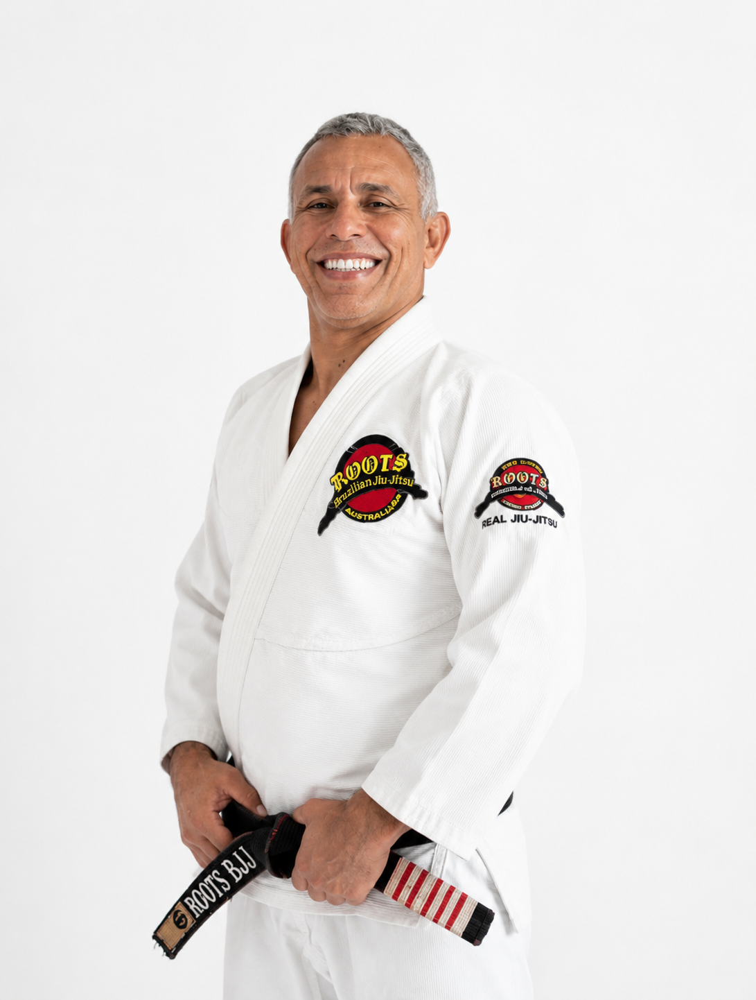
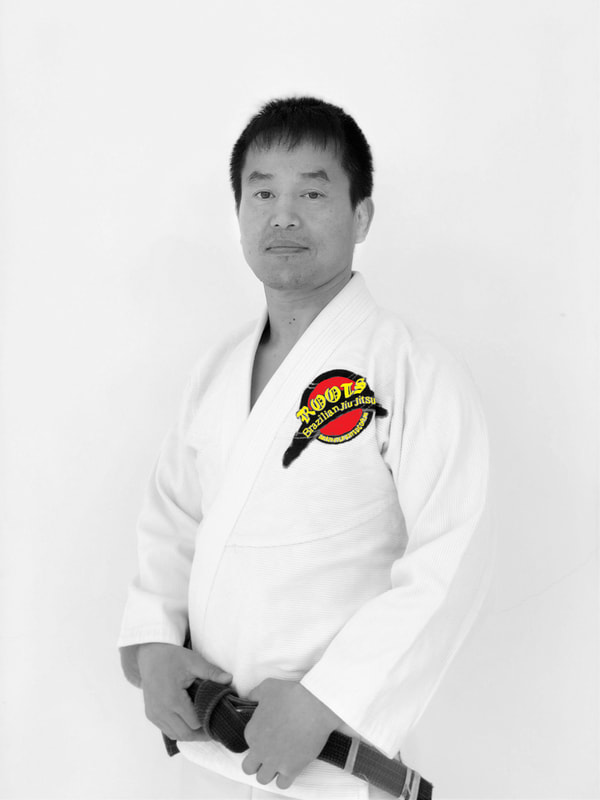
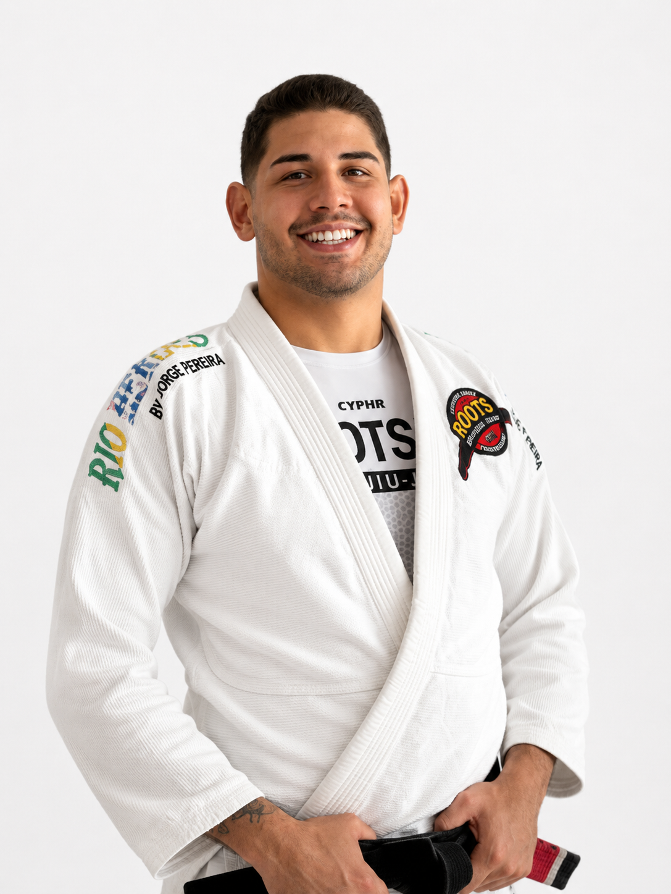

The team
Learn from people who live it.

Black Belt 6th Degree — est. black belt 1998
The highest-ranked Brazilian black belt in Australia, with over 40 years on the mat. Paulo served as a close-combat and self-defence instructor for the Brazilian Army’s 5th Guard Company in the Amazon division, and was the first Brazilian BJJ black belt to open an academy in Australia. He founded the NSW Brazilian Jiu-Jitsu Federation, and today leads ROOTS as founder and head instructor at the Northern Beaches HQ. Off the mat: professional surfer and airplane pilot.
South Korea · Ireland · Italy · Netherlands · USA · Brazil · Australia

BJJ Black Belt — 18+ years with ROOTS
Jo holds a black belt in Brazilian Jiu-Jitsu with over 18 years of training with ROOTS BJJ, and leads Team Roots Korea as head instructor from the Jakjeon HQ in Incheon. His martial arts background also spans Muay Thai, Tae Kwon Do and MMA.
Find Team Roots Korea’s nine academies on the world map · @rootsbjjkorea

BJJ Black Belt — athlete & coach
Átila Cardoso is a 25-year-old Brazilian Jiu-Jitsu black belt from Belém, Pará, Brazil. He began training at eleven and earned his black belt at 23 under the renowned Coral Belt Master Amaury Bitetti. With a strong competitive background and coaching experience, Átila develops students through high-level technical instruction, discipline, and the core values of Brazilian Jiu-Jitsu.
Ribeiro Jiu-Jitsu, Brazil — started as an instructor and was promoted to professor through consistent performance and dedication. Experienced in teaching children, adults, competitors and recreational students, with a focus on technical development, competition preparation and a positive learning environment.
“My mission is to use Brazilian Jiu-Jitsu to help people develop confidence, discipline, resilience, and technical excellence — both on and off the mats.”
Train with them this week.